2 Point Pattern data
Learning goals
- Understand spatial data structures used in R
- Understand what a point pattern and a point process is
- Understand what an observation window is
- Get familiar with the tools used in point pattern data analysis
- See the alignment with MaxEnt
Reading materials
From Spatial Data Science: with applications in R:
- Chapter 11: Point Patterns
- Chapter 7:
sfandstars
Summary
- Intro to
sfandstars - Intro to
spatstat - Point patterns, density functions
- Interactions in point processes
- Simulating point process
- Modelling density as a function of external variables
2.1 Intro to sf and stars
- Briefly:
sfprovides classes and methods for simple features- a feature is a “thing”, with geometrical properties (point(s), line(s), polygon(s)) and attributes
-
sfstores data indata.frames with a list-column (of classsfc) that holds the geometries
the Simple Feature standard
“Simple Feature Access” is an open standard for data with vector geometries. It defines a set of classes for geometries and operations on them.
- “simple” refers to curves that are “simply” represented by points connected by straight lines
- connecting lines are not allowed to self-intersect
- polygons can have holes, and have validity constraints: holes cannot extrude the outer ring etc.
- All spatial software uses this: ArcGIS, QGIS, PostGIS, other spatial databases, …
Why do all functions in sf start with st_?
- see here
The larger geospatial open source ecosystem
R and beyond:

sf operators, how to understand?
sf has objects at three nested “levels”:
sfg: a single geometry (without coordinate reference system)sfc: a set ofsfggeometries, with a coordinate reference system and bounding boxsf: adata.frameor tibble with at least one geometry (sfc) column-
Operations not involving geometry (
data.frame; base R; tidyverse)- geometry column +
sfclass is sticky! - this can be convenient, and sometimes annoying
- use
as.data.frameoras_tibbleto strip thesfclass label
- geometry column +
-
Operations involving only geometry
-
predicates (resulting
TRUE/FALSE)- unary
- binary: DE9-IM; work on two sets, result
sgbp, which is a sparse logical matrix representation- is_within_distance
-
measures
- unary: length, area
- binary: distance,
by_element = FALSE
-
transformers
- unary: buffer, centroid
- binary: intersection, union, difference, symdifference
- n-ary: intersection, difference
-
predicates (resulting
-
Operations involving geometry and attributes
- many of the above!
st_joinaggregate-
st_interpolate_aw: requires expression whether variable is spatially extensive or intensive
2.2 sf and spatstat
We can try to convert an sf object to a ppp (point pattern object in spatstat):
library(sf)
# Linking to GEOS 3.12.1, GDAL 3.8.4, PROJ 9.4.0; sf_use_s2() is TRUE
library(spatstat)
# Loading required package: spatstat.data
# Loading required package: spatstat.univar
# spatstat.univar 3.0-1
# Loading required package: spatstat.geom
# spatstat.geom 3.3-3
# Loading required package: spatstat.random
# spatstat.random 3.3-2
# Loading required package: spatstat.explore
# Loading required package: nlme
# spatstat.explore 3.3-2
# Loading required package: spatstat.model
# Loading required package: rpart
# spatstat.model 3.3-2
# Loading required package: spatstat.linnet
# spatstat.linnet 3.2-2
#
# spatstat 3.2-1
# For an introduction to spatstat, type 'beginner'
demo(nc, echo = FALSE, ask = FALSE)
pts = st_centroid(st_geometry(nc))
as.ppp(pts) # ???
# Error: Only projected coordinates may be converted to spatstat
# class objectsNote that sf interprets a NA CRS as: flat, projected (Cartesian) space.
Why is this important?
(p1 = st_point(c(0, 0)))
# POINT (0 0)
(p2 = st_point(c(1, 0)))
# POINT (1 0)
st_distance(p1, p2)
# [,1]
# [1,] 1
st_sfc(p1, crs = 'OGC:CRS84')
# Geometry set for 1 feature
# Geometry type: POINT
# Dimension: XY
# Bounding box: xmin: 0 ymin: 0 xmax: 0 ymax: 0
# Geodetic CRS: WGS 84 (CRS84)
# POINT (0 0)
st_distance(st_sfc(p1, crs = 'OGC:CRS84'), st_sfc(p2, crs = 'OGC:CRS84'))
# Units: [m]
# [,1]
# [1,] 111195
(p1 = st_point(c(0, 80)))
# POINT (0 80)
(p2 = st_point(c(1, 80)))
# POINT (1 80)
st_distance(p1, p2)
# [,1]
# [1,] 1
st_distance(st_sfc(p1, crs = 'OGC:CRS84'), st_sfc(p2, crs = 'OGC:CRS84'))
# Units: [m]
# [,1]
# [1,] 19309Also areas:
p = st_as_sfc("POLYGON((0 80, 120 80, 240 80, 0 80))")
st_area(p)
# [1] 0
st_area(st_sfc(p, crs = 'OGC:CRS84')) |> units::set_units(km^2)
# 1620544 [km^2]
pole = st_as_sfc("POINT(0 90)")
st_intersects(pole, p)
# Sparse geometry binary predicate list of length 1, where the
# predicate was `intersects'
# 1: (empty)
st_intersects(st_sfc(pole, crs = 'OGC:CRS84'), st_sfc(p, crs = 'OGC:CRS84'))
# Sparse geometry binary predicate list of length 1, where the
# predicate was `intersects'
# 1: 1What to do with nc? Project to \(R^2\) (flat space):
nc |> st_transform('EPSG:32119') |> st_centroid() -> pts
# Warning: st_centroid assumes attributes are constant over
# geometries
pts
# Simple feature collection with 100 features and 14 fields
# Attribute-geometry relationships: constant (6), aggregate (8)
# Geometry type: POINT
# Dimension: XY
# Bounding box: xmin: 149000 ymin: 36500 xmax: 898000 ymax: 306000
# Projected CRS: NAD83 / North Carolina
# First 10 features:
# AREA PERIMETER CNTY_ CNTY_ID NAME FIPS FIPSNO CRESS_ID
# 1 0.114 1.44 1825 1825 Ashe 37009 37009 5
# 2 0.061 1.23 1827 1827 Alleghany 37005 37005 3
# 3 0.143 1.63 1828 1828 Surry 37171 37171 86
# 4 0.070 2.97 1831 1831 Currituck 37053 37053 27
# 5 0.153 2.21 1832 1832 Northampton 37131 37131 66
# 6 0.097 1.67 1833 1833 Hertford 37091 37091 46
# 7 0.062 1.55 1834 1834 Camden 37029 37029 15
# 8 0.091 1.28 1835 1835 Gates 37073 37073 37
# 9 0.118 1.42 1836 1836 Warren 37185 37185 93
# 10 0.124 1.43 1837 1837 Stokes 37169 37169 85
# BIR74 SID74 NWBIR74 BIR79 SID79 NWBIR79 geom
# 1 1091 1 10 1364 0 19 POINT (385605 3e+05)
# 2 487 0 10 542 3 12 POINT (419198 306144)
# 3 3188 5 208 3616 6 260 POINT (458418 296669)
# 4 508 1 123 830 2 145 POINT (876266 298782)
# 5 1421 9 1066 1606 3 1197 POINT (752184 297618)
# 6 1452 7 954 1838 5 1237 POINT (789602 291533)
# 7 286 0 115 350 2 139 POINT (857738 297588)
# 8 420 0 254 594 2 371 POINT (815437 301289)
# 9 968 4 748 1190 2 844 POINT (689435 294013)
# 10 1612 1 160 2038 5 176 POINT (498892 294730)
(pp = as.ppp(pts))
# Marked planar point pattern: 100 points
# Mark variables:
# AREA PERIMETER CNTY_ CNTY_ID NAME FIPS FIPSNO CRESS_ID BIR74
# SID74 NWBIR74 BIR79 SID79 NWBIR79
# window: rectangle = [148701, 898181] x [36519, 306144] units
st_as_sf(pp)
# Simple feature collection with 101 features and 15 fields
# Geometry type: GEOMETRY
# Dimension: XY
# Bounding box: xmin: 149000 ymin: 36500 xmax: 898000 ymax: 306000
# CRS: NA
# First 10 features:
# AREA PERIMETER CNTY_ CNTY_ID NAME FIPS FIPSNO CRESS_ID
# NA NA NA NA NA <NA> <NA> NA NA
# 1 0.114 1.44 1825 1825 Ashe 37009 37009 5
# 2 0.061 1.23 1827 1827 Alleghany 37005 37005 3
# 3 0.143 1.63 1828 1828 Surry 37171 37171 86
# 4 0.070 2.97 1831 1831 Currituck 37053 37053 27
# 5 0.153 2.21 1832 1832 Northampton 37131 37131 66
# 6 0.097 1.67 1833 1833 Hertford 37091 37091 46
# 7 0.062 1.55 1834 1834 Camden 37029 37029 15
# 8 0.091 1.28 1835 1835 Gates 37073 37073 37
# 9 0.118 1.42 1836 1836 Warren 37185 37185 93
# BIR74 SID74 NWBIR74 BIR79 SID79 NWBIR79 label
# NA NA NA NA NA NA NA window
# 1 1091 1 10 1364 0 19 point
# 2 487 0 10 542 3 12 point
# 3 3188 5 208 3616 6 260 point
# 4 508 1 123 830 2 145 point
# 5 1421 9 1066 1606 3 1197 point
# 6 1452 7 954 1838 5 1237 point
# 7 286 0 115 350 2 139 point
# 8 420 0 254 594 2 371 point
# 9 968 4 748 1190 2 844 point
# geom
# NA POLYGON ((148701 36519, 898...
# 1 POINT (385605 3e+05)
# 2 POINT (419198 306144)
# 3 POINT (458418 296669)
# 4 POINT (876266 298782)
# 5 POINT (752184 297618)
# 6 POINT (789602 291533)
# 7 POINT (857738 297588)
# 8 POINT (815437 301289)
# 9 POINT (689435 294013)2.3 Exercises
- Compute the distance between
POINT(10 -90)andPOINT(50 -90), assuming (i) these are coordinates in a Cartesian space, and (ii) these are geodetic coordinates. What are the units of the result? - Load the
ncdataset into your session (e.g. usinglibrary(sf); demo(nc)) and convert it into astarsobject using (i)st_as_stars(), (ii)st_rasterize(), (iii)st_interpolate_aw() - Load the
L7_ETMsdataset into your session (e.g. usinglibrary(stars); L7_ETMs = st_as_stars(L7_ETMs)), and convert the object to ansfobject (i) usingst_as_sf(), (ii) usingst_as_sf(..., as_points = TRUE), and explain the differences (also plot the resultingsfobjects). Randomly sample 100 points from the bounding box ofL7_ETMs, and extract the image values at these points usingst_extract(), and convert the result into ansfobject.
2.4 Intro to spatstat
Consider a point pattern that consist of
- a set of known coordinates
- an observation window
We can ask ourselves: our point pattern be a realisation of a completely spatially random (CSR) process? A CSR process has
- a spatially constant intensity (mean: first order property)
- completely independent locations (interactions: second order property)
e.g.
Or does it have a non-constant intensity, but otherwise independent points?
Or does it have constant intensity, but dependent points:
or a combination:

2.5 Checking homogeneity
(q = quadrat.test(CSR))
# Warning: Some expected counts are small; chi^2 approximation may be
# inaccurate
#
# Chi-squared test of CSR using quadrat counts
#
# data: CSR
# X2 = 25, df = 24, p-value = 0.9
# alternative hypothesis: two.sided
#
# Quadrats: 5 by 5 grid of tiles
plot(q)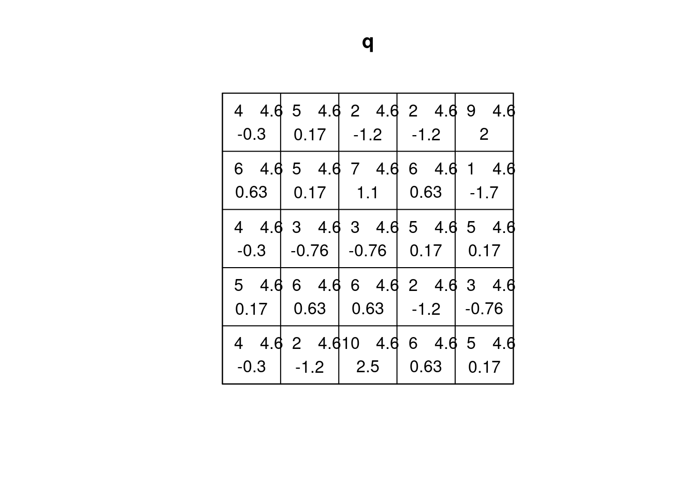
(q = quadrat.test(ppi))
#
# Chi-squared test of CSR using quadrat counts
#
# data: ppi
# X2 = 81, df = 24, p-value = 8e-08
# alternative hypothesis: two.sided
#
# Quadrats: 5 by 5 grid of tiles
plot(q)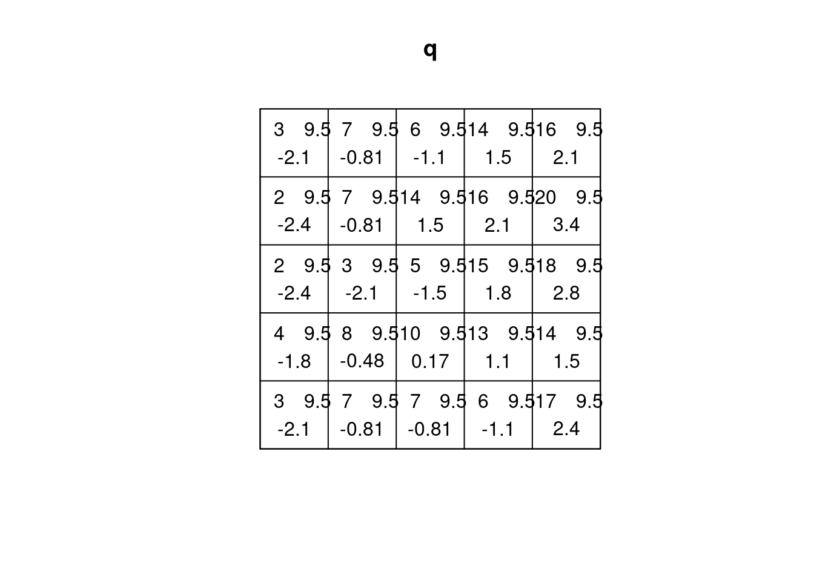
2.6 Estimating density
- main parameter: bandwidth (
sigma): determines the amound of smoothing. - if
sigmais not specified: usesbw.diggle, an automatically tuned bandwidth
Correction for edge effect?
density(CSR) |> plot()
# Warning in seq.default(xrange[1L], xrange[2L], length = n + 1L):
# partial argument match of 'length' to 'length.out'
plot(CSR, add = TRUE, col = 'green')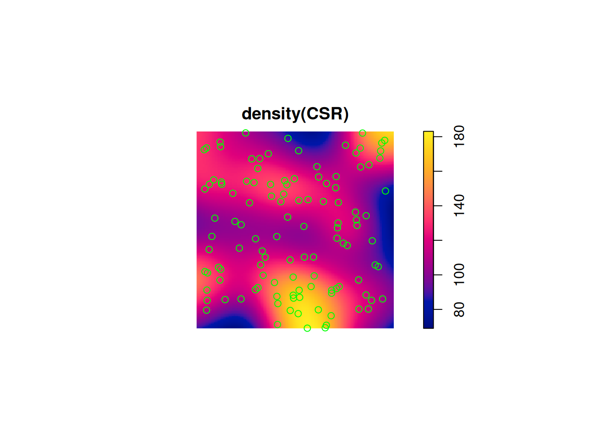
density(ppi) |> plot()
# Warning in seq.default(xrange[1L], xrange[2L], length = n + 1L):
# partial argument match of 'length' to 'length.out'
plot(ppi, add = TRUE, col = 'green')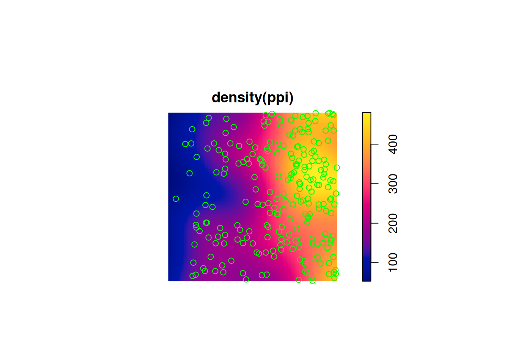
density(ppi, sigma = .05) |> plot()
# Warning in seq.default(xrange[1L], xrange[2L], length = n + 1L):
# partial argument match of 'length' to 'length.out'
plot(ppi, add = TRUE, col = 'green')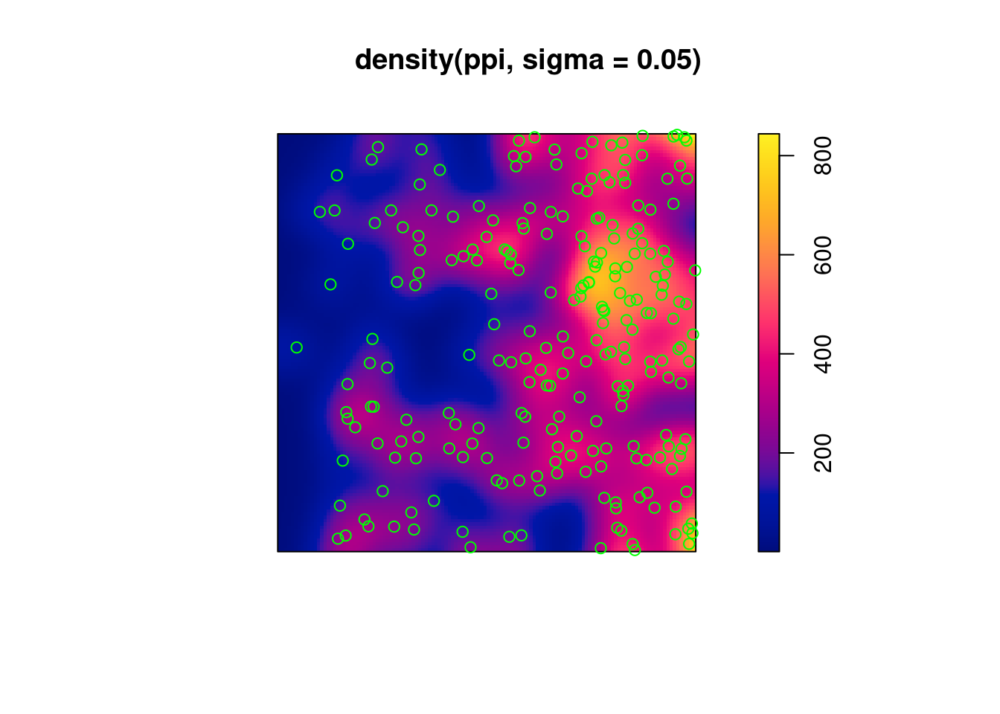
2.7 Assessing interactions: clustering/inhibition
The K-function (“Ripley’s K”) is the expected number of additional random (CSR) points within a distance r of a typical random point in the observation window.
The G-function (nearest neighbour distance distribution) is the cumulative distribution function G of the distance from a typical random point of X to the nearest other point of X.
envelope(CSR, Lest) |> plot()
# Generating 99 simulations of CSR ...
# 1, 2, 3, 4, 5, 6, 7, 8, 9, 10, 11, 12, 13, 14, 15, 16, 17,
# 18, 19, 20, 21, 22, 23, 24, 25, 26, 27, 28, 29, 30, 31, 32, 33, 34,
# 35, 36, 37, 38, 39, 40, 41, 42, 43, 44, 45, 46, 47, 48, 49, 50, 51,
# 52, 53, 54, 55, 56, 57, 58, 59, 60, 61, 62, 63, 64, 65, 66, 67, 68,
# 69, 70, 71, 72, 73, 74, 75, 76, 77, 78, 79, 80, 81, 82, 83, 84, 85,
# 86, 87, 88, 89, 90, 91, 92, 93, 94, 95, 96, 97, 98,
# 99.
#
# Done.
envelope(cl, Lest) |> plot()
# Generating 99 simulations of CSR ...
# 1, 2, 3, 4, 5, 6, 7, 8, 9, 10, 11, 12, 13, 14, 15, 16, 17,
# 18, 19, 20, 21, 22, 23, 24, 25, 26, 27, 28, 29, 30, 31, 32, 33, 34,
# 35, 36, 37, 38, 39, 40, 41, 42, 43, 44, 45, 46, 47, 48, 49, 50, 51,
# 52, 53, 54, 55, 56, 57, 58, 59, 60, 61, 62, 63, 64, 65, 66, 67, 68,
# 69, 70, 71, 72, 73, 74, 75, 76, 77, 78, 79, 80, 81, 82, 83, 84, 85,
# 86, 87, 88, 89, 90, 91, 92, 93, 94, 95, 96, 97, 98,
# 99.
#
# Done.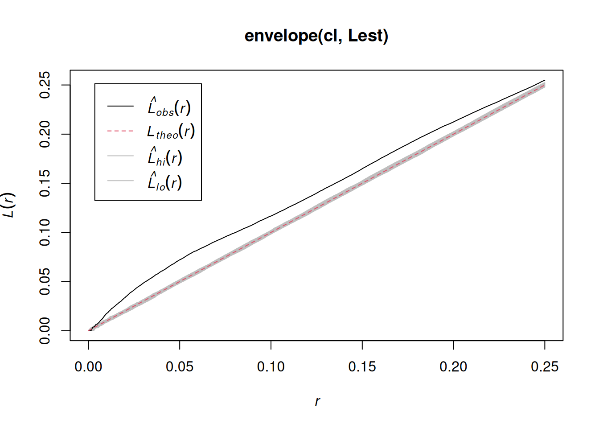
envelope(hc, Lest) |> plot()
# Generating 99 simulations of CSR ...
# 1, 2, 3, 4, 5, 6, 7, 8, 9, 10, 11, 12, 13, 14, 15, 16, 17,
# 18, 19, 20, 21, 22, 23, 24, 25, 26, 27, 28, 29, 30, 31, 32, 33, 34,
# 35, 36, 37, 38, 39, 40, 41, 42, 43, 44, 45, 46, 47, 48, 49, 50, 51,
# 52, 53, 54, 55, 56, 57, 58, 59, 60, 61, 62, 63, 64, 65, 66, 67, 68,
# 69, 70, 71, 72, 73, 74, 75, 76, 77, 78, 79, 80, 81, 82, 83, 84, 85,
# 86, 87, 88, 89, 90, 91, 92, 93, 94, 95, 96, 97, 98,
# 99.
#
# Done.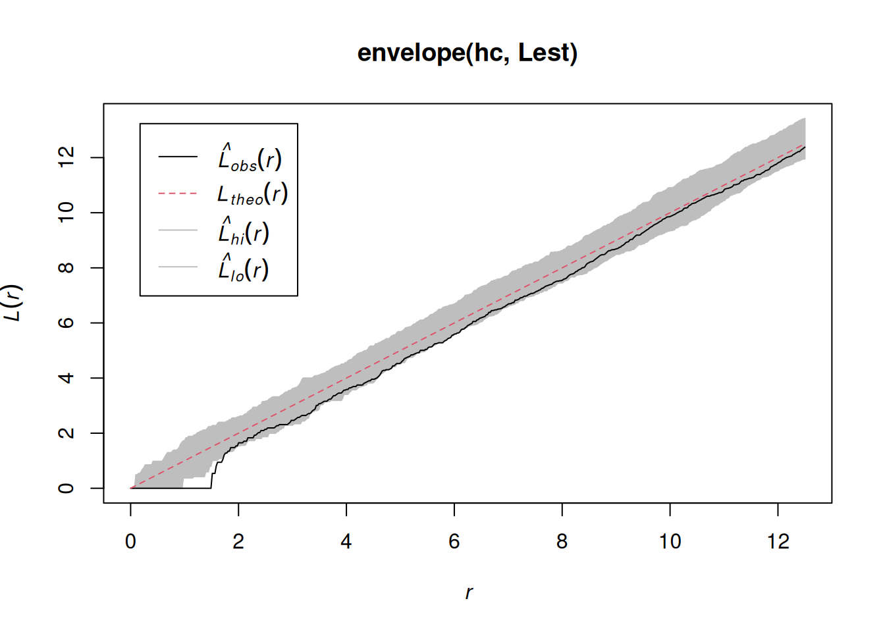
envelope(ppi, Lest) |> plot()
# Generating 99 simulations of CSR ...
# 1, 2, 3, 4, 5, 6, 7, 8, 9, 10, 11, 12, 13, 14, 15, 16, 17,
# 18, 19, 20, 21, 22, 23, 24, 25, 26, 27, 28, 29, 30, 31, 32, 33, 34,
# 35, 36, 37, 38, 39, 40, 41, 42, 43, 44, 45, 46, 47, 48, 49, 50, 51,
# 52, 53, 54, 55, 56, 57, 58, 59, 60, 61, 62, 63, 64, 65, 66, 67, 68,
# 69, 70, 71, 72, 73, 74, 75, 76, 77, 78, 79, 80, 81, 82, 83, 84, 85,
# 86, 87, 88, 89, 90, 91, 92, 93, 94, 95, 96, 97, 98,
# 99.
#
# Done.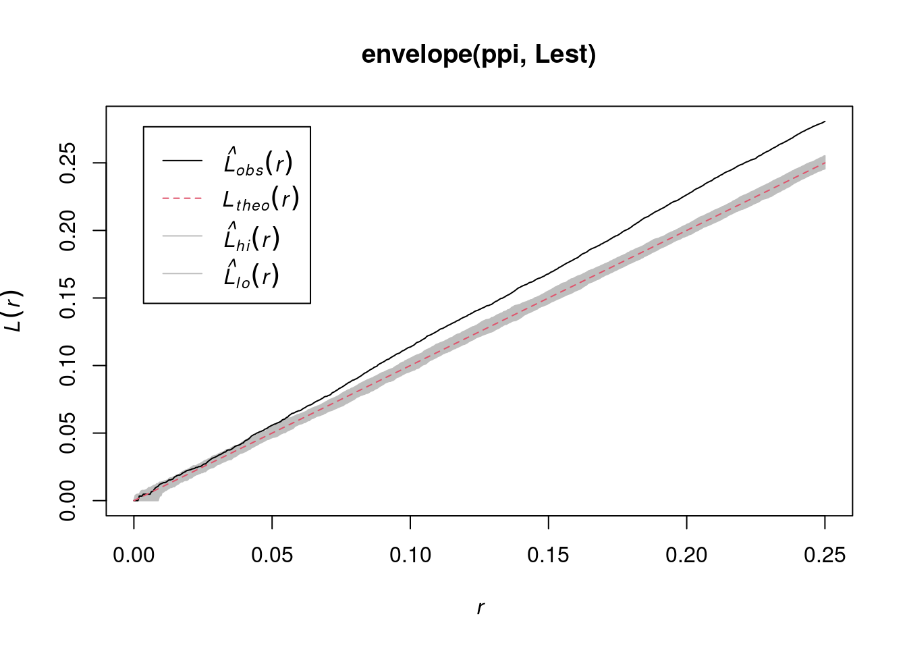
envelope(ppi, Linhom) |> plot()
# Generating 99 simulations of CSR ...
# 1, 2, 3, 4, 5, 6, 7, 8, 9, 10, 11, 12, 13, 14, 15, 16, 17,
# 18, 19, 20, 21, 22, 23, 24, 25, 26, 27, 28, 29, 30, 31, 32, 33, 34,
# 35, 36, 37, 38, 39, 40, 41, 42, 43, 44, 45, 46, 47, 48, 49, 50, 51,
# 52, 53, 54, 55, 56, 57, 58, 59, 60, 61, 62, 63, 64, 65, 66, 67, 68,
# 69, 70, 71, 72, 73, 74, 75, 76, 77, 78, 79, 80, 81, 82, 83, 84, 85,
# 86, 87, 88, 89, 90, 91, 92, 93, 94, 95, 96, 97, 98,
# 99.
#
# Done.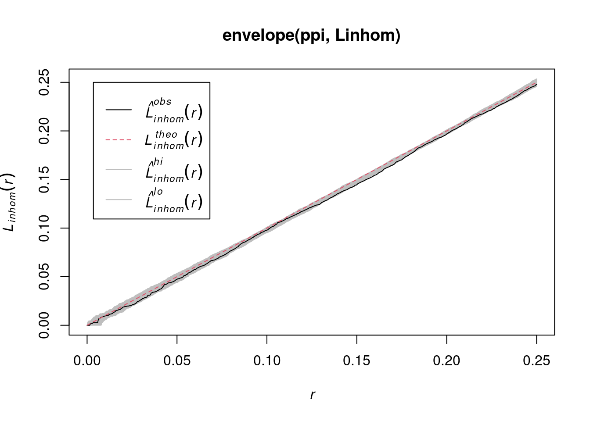
envelope(Y , Lest) |> plot()
# Generating 99 simulations of CSR ...
# 1, 2, 3, 4, 5, 6, 7, 8, 9, 10, 11, 12, 13, 14, 15, 16, 17,
# 18, 19, 20, 21, 22, 23, 24, 25, 26, 27, 28, 29, 30, 31, 32, 33, 34,
# 35, 36, 37, 38, 39, 40, 41, 42, 43, 44, 45, 46, 47, 48, 49, 50, 51,
# 52, 53, 54, 55, 56, 57, 58, 59, 60, 61, 62, 63, 64, 65, 66, 67, 68,
# 69, 70, 71, 72, 73, 74, 75, 76, 77, 78, 79, 80, 81, 82, 83, 84, 85,
# 86, 87, 88, 89, 90, 91, 92, 93, 94, 95, 96, 97, 98,
# 99.
#
# Done.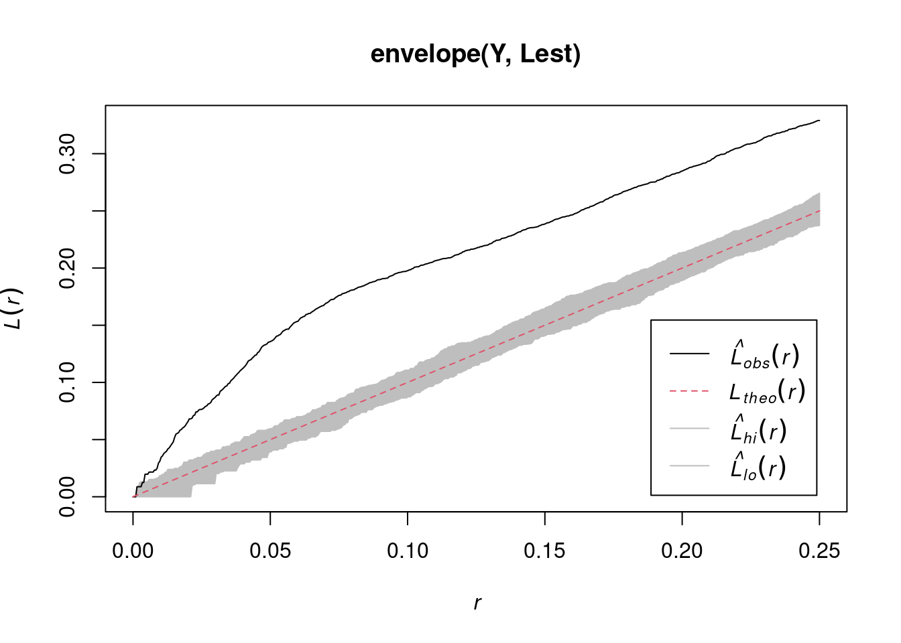
envelope(Y , Linhom) |> plot()
# Generating 99 simulations of CSR ...
# 1, 2, 3, 4, 5, 6, 7, 8, 9, 10, 11, 12, 13, 14, 15, 16, 17,
# 18, 19, 20, 21, 22, 23, 24, 25, 26, 27, 28, 29, 30, 31, 32, 33, 34,
# 35, 36, 37, 38, 39, 40, 41, 42, 43, 44, 45, 46, 47, 48, 49, 50, 51,
# 52, 53, 54, 55, 56, 57, 58, 59, 60, 61, 62, 63, 64, 65, 66, 67, 68,
# 69, 70, 71, 72, 73, 74, 75, 76, 77, 78, 79, 80, 81, 82, 83, 84, 85,
# 86, 87, 88, 89, 90, 91, 92, 93, 94, 95, 96, 97, 98,
# 99.
#
# Done.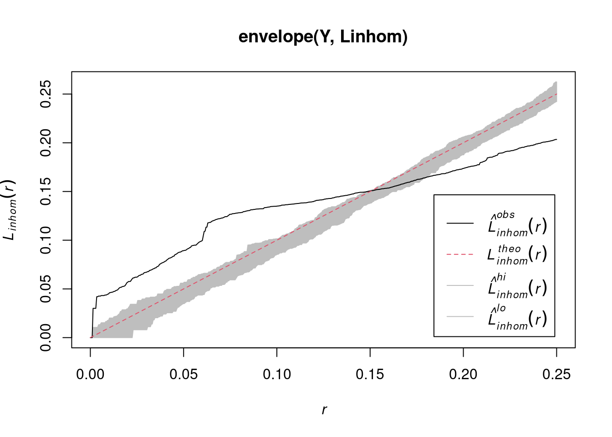
2.8 Fitting models to clustered data
# assuming Inhomogeneous Poisson:
ppm(ppi, ~x)
# Warning in FIT$coef: partial match of 'coef' to 'coefficients'
# Nonstationary Poisson process
# Fitted to point pattern dataset 'ppi'
#
# Log intensity: ~x
#
# Fitted trend coefficients:
# (Intercept) x
# 4.33 1.96
#
# Estimate S.E. CI95.lo CI95.hi Ztest Zval
# (Intercept) 4.33 0.174 3.99 4.67 *** 24.91
# x 1.96 0.247 1.48 2.45 *** 7.96
# assuming Inhomogeneous clustered:
kppm(Y, ~x)
# Warning in FIT$coef: partial match of 'coef' to 'coefficients'
# Inhomogeneous cluster point process model
# Fitted to point pattern dataset 'Y'
# Fitted by minimum contrast
# Summary statistic: inhomogeneous K-function
#
# Log intensity: ~x
#
# Fitted trend coefficients:
# (Intercept) x
# 3.69 1.47
#
# Cluster model: Thomas process
# Fitted cluster parameters:
# kappa scale
# 7.731 0.038
# Mean cluster size: [pixel image]
#
# Cluster strength: phi = 7.122
# Sibling probability: psib = 0.87692.9 MaxEnt and species distribution modelling
It seems that MaxEnt fits an inhomogeneous Poisson process
Starting from presence (only) observations, it
- adds background (absence) points, uniformly in space
- fits logistic regression models to the 0/1 data, using environmental covariates
- ignores spatial interactions, spatial distances
R package maxnet does that using glmnet (lasso or elasticnet regularization on)
A maxnet example using stars is available in the development version, which can be installed directly from github by remotes::install_github("mrmaxent/maxnet") ; and the same maxnet example using terra (thanks to Ben Tupper).
Relevant papers:
- a paper detailing the equivalence and differences between point pattern models and MaxEnt is found here.
- A statistical explanation of MaxEnt for Ecologists
2.10 Exercises
- From the point pattern shown in section 1.3, download the data as GeoPackage, and read into R
- Read the boundary of Germany using
rnaturalearth::ne_countries(scale = "larger", country = "Germany") - Create a plot showing both the observation window and the point pattern
- Do all observations fall inside the observation window?
- Create a ppp object from the points and the window
- Create a density map of the wind turbines, with the turbines added
- Test whether the point pattern is homogeneous
- Create a plot with the (estimated) density of the wind turbines, with the turbine points added
- Verify that the mean density multiplied by the area of the window approximates the number of turbines
- Test for interaction: create diagnostic plots to verify whether the point pattern is clustered, or exhibits repulsion
2.11 Further reading
- E. Pebesma, 2018. Simple Features for R: Standardized Support for Spatial Vector Data. The R Journal 10:1, 439-446.
- A. Baddeley, E. Rubak and R Turner, 2016. Spatial Point Patterns: methodology and Applications in R; Chapman and Hall/CRC 810 pages.
- J. Illian, A. Penttinen, H. Stoyan and D. Stoyan, 2008. Statistical Analysis and Modelling of Spatial Point Patterns; Wiley, 534 pages.